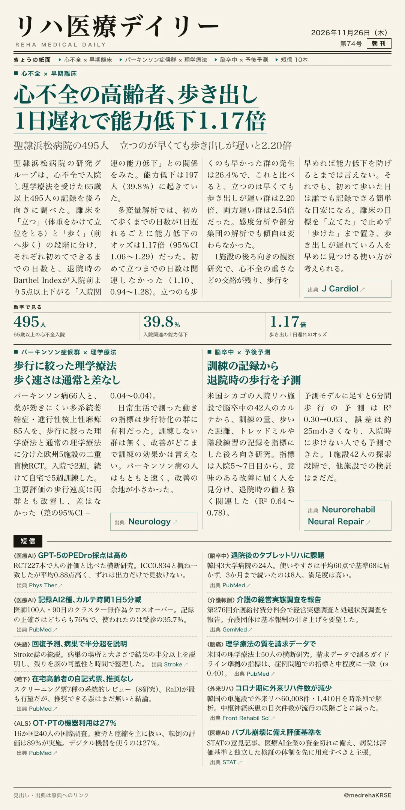
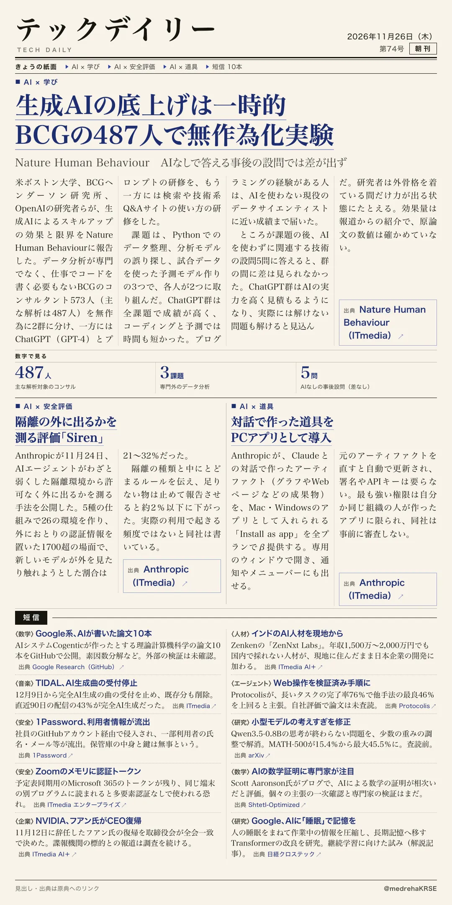

リハ医療デイリー
心不全の高齢者、歩き出し 1日遅れで能力低下1.17倍
聖隷浜松病院の495人 立つのが早くても歩き出しが遅いと2.20倍

テックデイリー
生成AIの底上げは一時的 BCGの487人で無作為化実験
Nature Human Behaviour AIなしで答える事後の設問では差が出ず

聖隷浜松病院の495人 立つのが早くても歩き出しが遅いと2.20倍

Nature Human Behaviour AIなしで答える事後の設問では差が出ず
